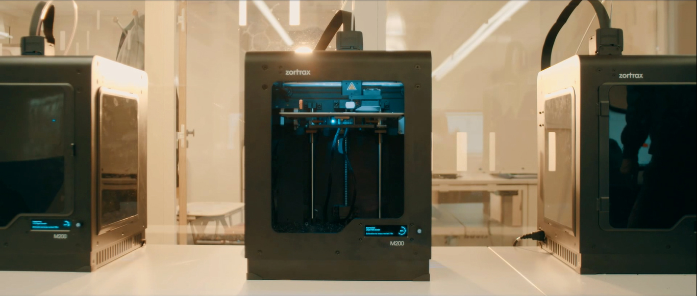

Pour sa cinquième édition, le makers' bootcamp a exploré la thématique de l'agriculture urbaine et permis à 40 participants d'apprendre #arduino, la modélisation 3D et #HTML #CSS #JS pour fabriquer 10 potagers connectés!

Du 01 au 04 novembre, les makers’lab d’emlyon business school - Lyon - Saint-Etienne - Paris - ont organisé la 4ème édition du makers bootcamp en plongeant 60 participants dans l’univers de la robotique!
En seulement 4 jours, les participants ont pu découvrir les bases de l'électronique, appréhender la programmation HTML & JavaScript, apprendre à utiliser une découpe laser et à dessiner sur Illustrator dans le but de fabriquer des robots de téléprésence!
Hease Robotics, Hoomano et Poppy project ont également pris part à l’événement à l’occasion d’une conférence sur la robotique.
Découvrez cette aventure en vidéo et merci à nos 60 earlymakers!

From April 26 to April 29, twenty students from emlyon business school participated in the third edition of the makers bootcamp, immersing themselves in the world of coding & video games!
They had four days of intense classes to learn how to code with Javascript & Python, use a laser cutter, draw using Adobe Illustrator in order to build a PONG arcade machine!
Gamebuino, Kiupe Games and Innorobo took part in this event by giving a conference on coding.
Discover this adventure in the following video!

Du mercredi 22 février au samedi 25 février 2017, une vingtaine d'étudiants ont plongé dans l'univers de l'impression 3D.
4 jours intensifs de cours avec l'objectif final de construire leurs propres imprimantes 3D puis s’en servir pour fabriquer des prothèses de main issues du projet mondial e-NABLE.
Du mercredi 22 février au samedi 25 février 2017, une vingtaine d'étudiants ont plongé dans l'univers de l'impression 3D.
4 jours intensifs de cours avec l'objectif final de construire leurs propres imprimantes 3D puis s’en servir pour fabriquer des prothèses de main issues du projet mondial e-NABLE.